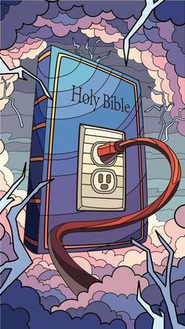
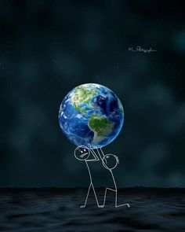

SEMANA DE ORAÇÃO
... Buscar me eis e me Achareis Quando me Buscardes de todo o seu Coração. Jr.29.13
Qual tem sido a sua prioridade nesses dias? os estudos, namoro, trabalho, profissão, dinheiro, amigos? De fato você tem muito que correr atrás, mas de tudo isso que pretende ou almeja, a maior conquista de todas é achar o Senhor. Pois é Nele que todas as coisas estão.Quando encontramos o Senhor as nossas vida é suprida em tudo pois Ele é o Autor da vida e do tempo. " Rm 11.36- Porque dele, e por ele, e para ele, são todas as coisas; glória, pois, a ele eternamente. Amém". Certa vez Jesus ensinando disse que Ele é o Caminho, a Verdade e a Vida então se você esta correndo atrás da vida preste atenção se não esta indo pelo " CAMINHO ERRADO".

Em Timóteo 3,16, temos a confirmação de que toda a Bíblia é inspirada por Deus: “Toda a Escritura é inspirada por Deus e útil para o ensino,
para a repreensão, para a correção, para a educação na justiça, a fim de que o homem de Deus seja perfeito e perfeitamente habilitado para
toda boa obra”.
Se tem uma coisa que muitos não percebem é isso. A Biblia é um livro que ultrapassa qualquer pensamento humano, sim de fato ha muitos escritores sabios e
inspirados que escreveram romances, filmes e Series que estão ou ja estiverem por aqui. Como Shakespeare em seu romance " Romeu e Julieta", ou
George Lucas criador da famosa saga de ficção ciêntifica " Star Wars". Mas se comparado as Escrituras Sagradas essas inspirações humanas se
tornam obsoletas, a realidade das Escrituras. Se atente na real, temos um LIVRO Sobrenatural de fato, que fala de um DEUS real,de um Reino que
não é a terra e de seres como anjos, demonios de lugares como o inferno e paraiso, vida eterna ou morte eterna... esse é o Livro dos livros
que Deus deixou a você ... Fala sério, isso não te deixa curioso em descobrir o que esta escrito nesse LIVRO SAGRADO? haaaa tem uma regra que nele esta escrito
que antes de você começar a Ler, é necessário você falar com Deus pra Ele REVELAR o que esta escrito ali...caso contrario será apenas um livro como
outro qualquer.
Livro dos livros.
Lâmpada para os meus pés é a tua palavra, e luz para o meu caminho. . Salmos.119-105
Em Timóteo 3,16, temos a confirmação de que toda a Bíblia é inspirada por Deus: “Toda a Escritura é inspirada por Deus e útil para o ensino,
para a repreensão, para a correção, para a educação na justiça, a fim de que o homem de Deus seja perfeito e perfeitamente habilitado para
toda boa obra”.
Se tem uma coisa que muitos não percebem é isso. A Biblia é um livro que ultrapassa qualquer pensamento humano, sim de fato ha muitos escritores sabios e
inspirados que escreveram romances, filmes e Series que estão ou ja estiverem por aqui. Como Shakespeare em seu romance " Romeu e Julieta", ou
George Lucas criador da famosa saga de ficção ciêntifica " Star Wars". Mas se comparado as Escrituras Sagradas essas inspirações humanas se
tornam obsoletas, a realidade das Escrituras. Se atente na real, temos um LIVRO Sobrenatural de fato, que fala de um DEUS real,de um Reino que
não é a terra e de seres como anjos, demonios de lugares como o inferno e paraiso, vida eterna ou morte eterna... esse é o Livro dos livros
que Deus deixou a você ... Fala sério, isso não te deixa curioso em descobrir o que esta escrito nesse LIVRO SAGRADO? haaaa tem uma regra que nele esta escrito
que antes de você começar a Ler, é necessário você falar com Deus pra Ele REVELAR o que esta escrito ali...caso contrario será apenas um livro como
outro qualquer.
..."1 Coríntios 2:14-16
Ora, o homem natural não compreende as coisas do Espírito de Deus, porque lhe parecem loucura; e não pode entendê-las, porque elas se discernem espiritualmente.
Mas o que é espiritual discerne bem tudo, e ele de ninguém é discernido. Porque quem conheceu a mente do Senhor, para que possa instruí-lo?
Mas nós temos a mente de Cristo."
